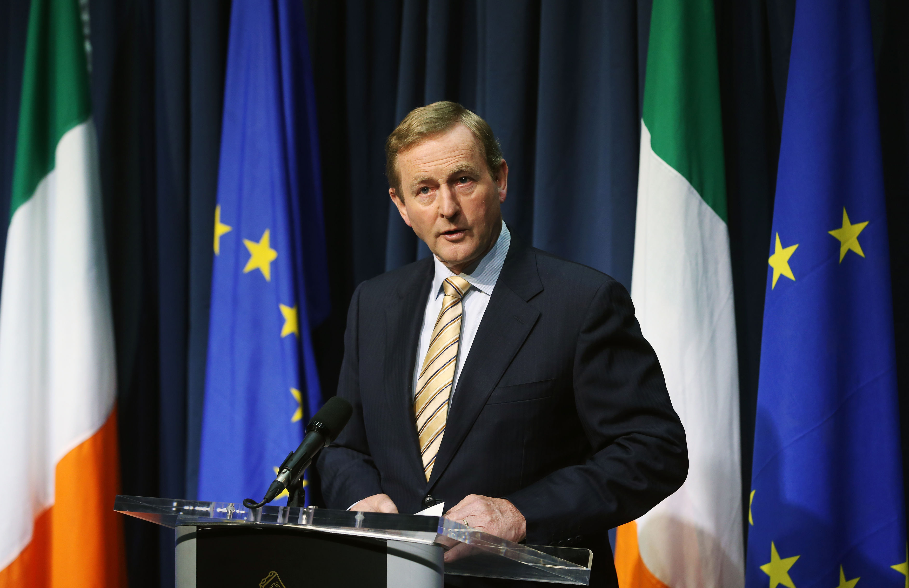

BELFAST: Britain's Northern Ireland minister must decide whether to call another election, return to direct British rule of the province or give parties more time after talks to form a new regional government failed.
Northern Ireland's parties had until Monday at 1500 GMT to form a new power-sharing government but all said a deal would not be reached after making little progress on a range of issues deeply dividing the two main nationalist and unionist parties.

The failure to restore the province's administration after its collapse in January prolongs a period of political paralysis just as Britain starts talks to leave the European Union that will determine Northern Ireland's political and economic future.
"We regret very much that there wasn't sufficient progress made but I think we will return to these issues whenever we get the space to do so," Conor Murphy, a senior member of Northern Ireland's largest nationalist party, Sinn Fein, told BBC Radio.
Murphy said Britain's Northern Ireland Minister James Brokenshire told the parties he would make a statement in the British parliament on Tuesday. A spokeswoman for Brokenshire had no immediate comment on the timeline.
By law, Brokenshire must go the polls again in "a reasonable time" once the three weeks of post-election talks elapse. Analysts think he could announce fresh elections - the third in a year - but not set a date in a bid to provide extra time.
Both the British and Irish governments have repeatedly said they are against decision-making being taken back to London for the first time since 2007.
Sinn Fein effectively ended the talks on Sunday when they said agreement could not be reached in disputed issues including funding services for Irish language speakers, gay rights and inquiries into deaths during Northern Ireland's three decades of sectarian violence.
Can ayurveda help with cancer? AIIMS to study Do ayurvedic drugs help treat cancer? While proponents of the alternative therapy claim they do, the scientific community denies the same, citing lack of evidence.
World's most obese man to undergo surgery Doctors in Mexico have set a date for the world's heaviest manto undergo gastric bypass surgery, the media reported on Wednesday.